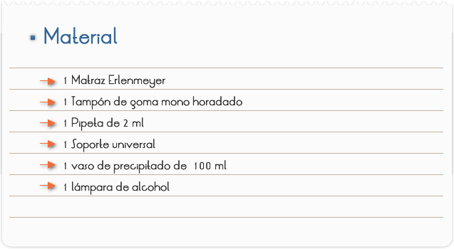
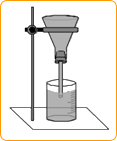
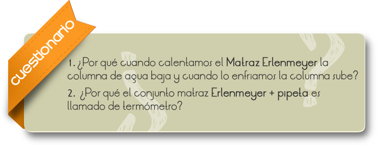

"TERMÓMETRO DE GALILEO"
Introducción
El termómetro de Galileo consiste en un tubo de vidrio vertical, cerrado por ambos extremos, que contiene agua en la que se encuentran varias esferas flotantes de vidrio cerradas que contienen cada una de ellas una cierta cantidad de líquido coloreado (agua). El tubo es lo suficientemente estrecho como para que las esferas deban colocarse una debajo de la otra. Cada esfera lleva en su parte inferior una etiqueta mostrando diferentes valores de temperatura. El intervalo de temperaturas del termómetro varía desde los 17 C hasta los 27 C con intervalos de 2 C
Objetivo
Comprobar el aumento de un volumen de un gas debido al aumento de temperatura.

1. Conecte el tapón de goma al matraz Erlenmeyer y a la pipeta el tampón, observando que no haya pérdidas.
2. Adapte el conjunto al soporte universal, de modo que el borde del matraz Erlenmeyer quede para abajo.
3. Caliente un poco el Erlenmeyer y sumerja la extremidad abierta (inferior) en un vaso de precipitados de 100 ml con agua.
4. Monte el termómetro y observe, la variación de la columna en la pipeta cuando calentamos, el Erlenmeyer o dejamos que enfríe a temperatura ambiente.


Comentarios
Uno de los primeros dispositivos para avaluar la temperatura fue el "termoscopio a aire" inventado por Galileo. Ese termoscopio no puede ser considerado propiamente un termómetro, una vez que no establece valores numéricos para la temperatura, o sea, apenas indica si el cuerpo está más caliente o más frío de lo que otro tomado como referencia.
El termoscopio de Galileo, es constituido de un bulbo conectado a un tubo de vidrio que tiene la extremidad inferior inmersa en un líquido. Cuando la temperatura del aire contenido en el bulbo aumenta, la presión del aire también aumenta y el nivel del líquido baja.
Consta que, originalmente, Galileo habría usado vino en su termoscopio para visualizar mejor el nivel del líquido.